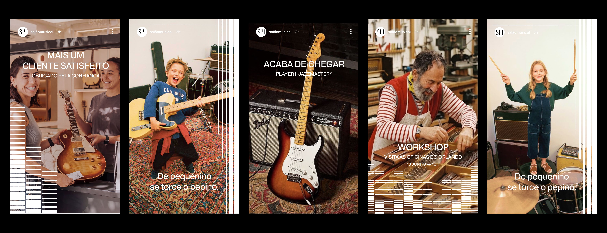
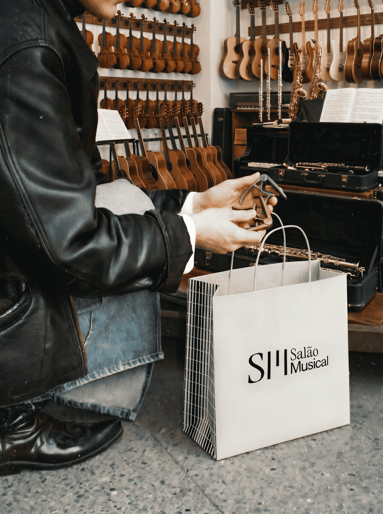
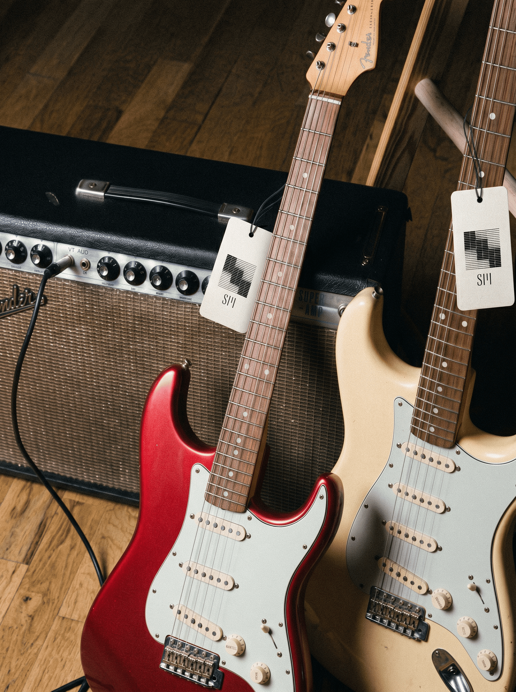
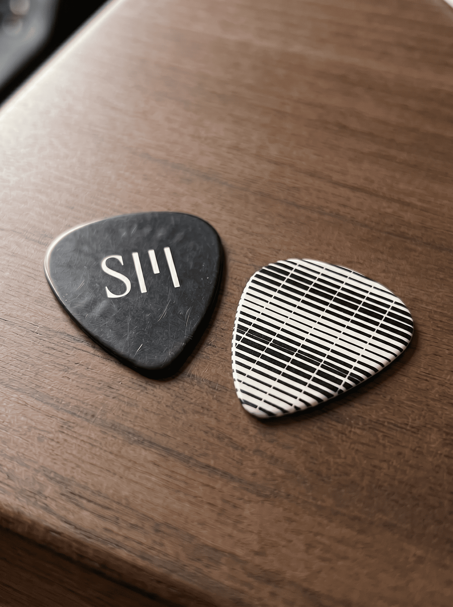
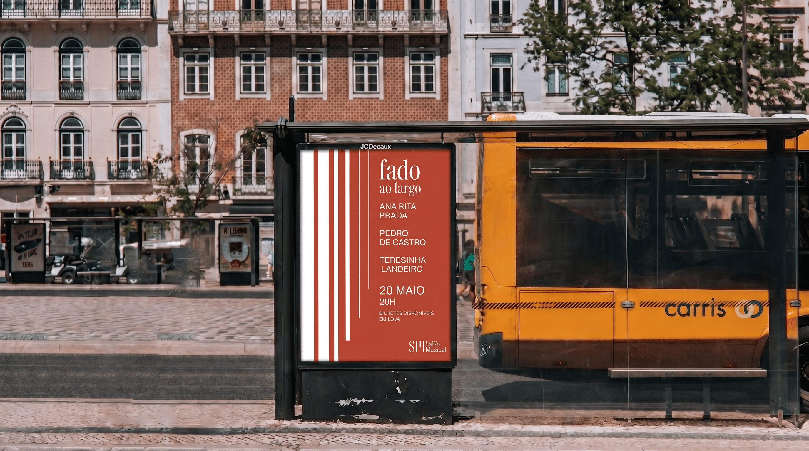

Salão Musical de Lisboa is a musical instrument shop founded in 1958. It began as a wind instrument workshop in Anjos and moved to Chiado, on Rua Nova do Almada, in 1990. It is a third-generation family business and the only instrument shop remaining in Lisbon's historic centre, specialising in traditional Portuguese instruments such as the guitarra portuguesa, viola de fado and regional violas, alongside music editions and ORFF instruments.
The project started as research, as part of a study on Lisbon's Lojas com História, and grew into the development of a brand identity and communication system. The starting point was a lack of visual consistency, with the shop using three different logos, and the absence of a defined voice, despite a singular position: being the only instrument shop left in Lisbon's historic centre.
The identity is built around five keywords, Histórico, Especializado, Familiar, Emblemático and Artesanal, and rests on a factual, direct tone with no advertising rhetoric, close to the way the shop itself speaks to the people who walk in. The typographic system pairs Instrument Serif for titles with PP Neue Montreal for everything else, in a restrained, editorial register.
Collaboration with: Inês Campos, Isa Goulart & Mariana Coelho




